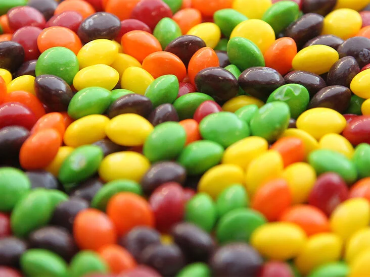
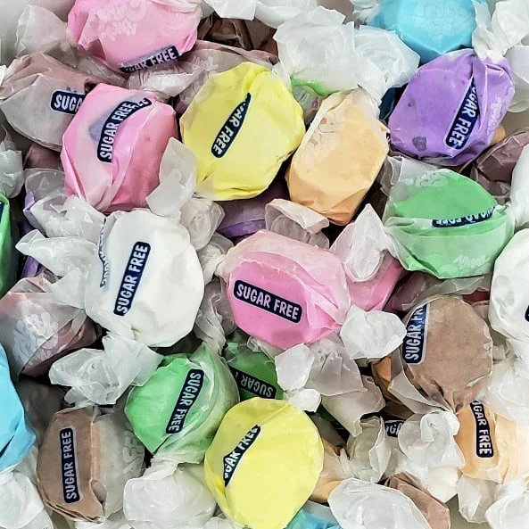

Our Candy

Gummy bears are bear-shaped candies made of gelatin, sugar, and water. They have a soft, chewy texture and come in various fruit flavors, sweet, sour, and tangy. Gummy bears have a sweet and fruity taste with a tangy note, and some are sour. The texture is soft and chewy, making them enjoyable to eat. Overall, gummy bears are a popular and fun candy that offers a wide range of flavors and textures, perfect for snacking and sharing.
₪10 shekels


Jelly beans are small, bean-shaped candies with a firm, gelatin-like shell and a soft, chewy interior. They come in a variety of flavors, including fruity, sour, sweet, and savory, and in different colors and designs. They have a sweet taste and a chewy texture that makes them fun to eat. Jelly beans are a classic and popular candy, perfect for snacking and sharing with others.
₪1 shekel

Skittles are small, fruit-flavored candies with a hard candy shell and a chewy, fruity center. They come in various flavors such as strawberry, orange, lemon, green apple, grape, etc. The candy shell gives a satisfying crunch and each Skittle has a different fruity taste. The candy is sweet and tangy, with bright and bold flavors that are easily recognizable. Skittles are popular and fun, ideal for sharing or satisfying a sweet tooth craving.
₪15 shekels

M&M's are small, colorful candies with a hard candy shell and a soft chocolate center. The classic M&M's are milk chocolate flavored and have a sweet taste. The candy shell provides a satisfying crunch, and the chocolate center is rich, smooth, and creamy. Overall, M&M's offer a delicious and popular snacking experience.
₪100 shekels

Sour Gummy Worms are worm-shaped candies with a sour coating made of gelatin, sugar, and water. They come in various fruity flavors such as sour apple, lemon, strawberry, and cherry. The candies have a chewy texture and provide a combination of sour and sweet tastes. When you put them in your mouth, you'll initially notice the sourness, followed by a sweet and fruity taste. Sour gummy worms are popular and fun candies perfect for satisfying sweet and sour cravings and sharing with others.
₪50 shekels

Taffy candy is a soft and chewy candy made by pulling a mixture of sugar, corn syrup, and butter. It comes in various flavors like vanilla, chocolate, fruit, and even savory flavors like bacon or cheese. When you chew taffy candy, it dissolves in your mouth, releasing a sweet and buttery taste. Taffy candy's texture is soft and chewy, and it's enjoyed by people of all ages.
₪25 shekels